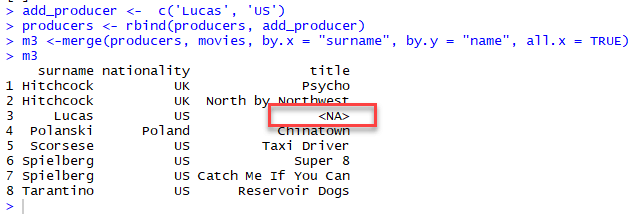

<!DOCTYPE html>

<html>

<head>

<meta charset="utf-8" />
<meta name="generator" content="pandoc" />
<meta http-equiv="X-UA-Compatible" content="IE=EDGE" />


<title>Lesson 8</title>

<script src="site_libs/jquery-1.11.3/jquery.min.js"></script>
<meta name="viewport" content="width=device-width, initial-scale=1" />
<link href="site_libs/bootstrap-3.3.5/css/flatly.min.css" rel="stylesheet" />
<script src="site_libs/bootstrap-3.3.5/js/bootstrap.min.js"></script>
<script src="site_libs/bootstrap-3.3.5/shim/html5shiv.min.js"></script>
<script src="site_libs/bootstrap-3.3.5/shim/respond.min.js"></script>
<script src="site_libs/jqueryui-1.11.4/jquery-ui.min.js"></script>
<link href="site_libs/tocify-1.9.1/jquery.tocify.css" rel="stylesheet" />
<script src="site_libs/tocify-1.9.1/jquery.tocify.js"></script>
<script src="site_libs/navigation-1.1/tabsets.js"></script>
<link href="site_libs/font-awesome-5.1.0/css/all.css" rel="stylesheet" />
<link href="site_libs/font-awesome-5.1.0/css/v4-shims.css" rel="stylesheet" />
<!DOCTYPE html PUBLIC "-//W3C//DTD HTML 4.01//EN" "http://www.w3.org/TR/html4/strict.dtd">
<html>
<head>
  <meta http-equiv="Content-Type" content="text/html; charset=utf-8">
  <meta http-equiv="Content-Style-Type" content="text/css">
  <title></title>
  <meta name="Generator" content="Cocoa HTML Writer">
  <meta name="CocoaVersion" content="1504">
  <!-- this script changes the anchor position -->
  <!-- http://jsfiddle.net/ianclark001/rkocah23/ -->
<script>
(function(document, history, location) {
  var HISTORY_SUPPORT = !!(history && history.pushState);

  var anchorScrolls = {
    ANCHOR_REGEX: /^#[^ ]+$/,
    OFFSET_HEIGHT_PX: 65,

    /**
     * Establish events, and fix initial scroll position if a hash is provided.
     */
    init: function() {
      this.scrollToCurrent();
      $(window).on('hashchange', $.proxy(this, 'scrollToCurrent'));
      $('body').on('click', 'a', $.proxy(this, 'delegateAnchors'));
    },

    /**
     * Return the offset amount to deduct from the normal scroll position.
     * Modify as appropriate to allow for dynamic calculations
     */
    getFixedOffset: function() {
      return this.OFFSET_HEIGHT_PX;
    },

    /**
     * If the provided href is an anchor which resolves to an element on the
     * page, scroll to it.
     * @param  {String} href
     * @return {Boolean} - Was the href an anchor.
     */
    scrollIfAnchor: function(href, pushToHistory) {
      var match, anchorOffset;

      if(!this.ANCHOR_REGEX.test(href)) {
        return false;
      }

      match = document.getElementById(href.slice(1));

      if(match) {
        anchorOffset = $(match).offset().top - this.getFixedOffset();
        $('html, body').animate({ scrollTop: anchorOffset});

        // Add the state to history as-per normal anchor links
        if(HISTORY_SUPPORT && pushToHistory) {
          history.pushState({}, document.title, location.pathname + href);
        }
      }

      return !!match;
    },
    
    /**
     * Attempt to scroll to the current location's hash.
     */
    scrollToCurrent: function(e) {
      if(this.scrollIfAnchor(window.location.hash) && e) {
        e.preventDefault();
      }
    },

    /**
     * If the click event's target was an anchor, fix the scroll position.
     */
    delegateAnchors: function(e) {
      var elem = e.target;

      if(this.scrollIfAnchor(elem.getAttribute('href'), true)) {
        e.preventDefault();
      }
    }
  };

    $(document).ready($.proxy(anchorScrolls, 'init'));
})(window.document, window.history, window.location);
</script>

</head>
<body>
</body>
</html>


<style type="text/css">code{white-space: pre;}</style>
<style type="text/css" data-origin="pandoc">
a.sourceLine { display: inline-block; line-height: 1.25; }
a.sourceLine { pointer-events: none; color: inherit; text-decoration: inherit; }
a.sourceLine:empty { height: 1.2em; }
.sourceCode { overflow: visible; }
code.sourceCode { white-space: pre; position: relative; }
div.sourceCode { margin: 1em 0; }
pre.sourceCode { margin: 0; }
@media screen {
div.sourceCode { overflow: auto; }
}
@media print {
code.sourceCode { white-space: pre-wrap; }
a.sourceLine { text-indent: -1em; padding-left: 1em; }
}
pre.numberSource a.sourceLine
  { position: relative; left: -4em; }
pre.numberSource a.sourceLine::before
  { content: attr(data-line-number);
    position: relative; left: -1em; text-align: right; vertical-align: baseline;
    border: none; pointer-events: all; display: inline-block;
    -webkit-touch-callout: none; -webkit-user-select: none;
    -khtml-user-select: none; -moz-user-select: none;
    -ms-user-select: none; user-select: none;
    padding: 0 4px; width: 4em;
    color: #aaaaaa;
  }
pre.numberSource { margin-left: 3em; border-left: 1px solid #aaaaaa;  padding-left: 4px; }
div.sourceCode
  {  }
@media screen {
a.sourceLine::before { text-decoration: underline; }
}
code span.al { color: #ff0000; font-weight: bold; } /* Alert */
code span.an { color: #60a0b0; font-weight: bold; font-style: italic; } /* Annotation */
code span.at { color: #7d9029; } /* Attribute */
code span.bn { color: #40a070; } /* BaseN */
code span.bu { } /* BuiltIn */
code span.cf { color: #007020; font-weight: bold; } /* ControlFlow */
code span.ch { color: #4070a0; } /* Char */
code span.cn { color: #880000; } /* Constant */
code span.co { color: #60a0b0; font-style: italic; } /* Comment */
code span.cv { color: #60a0b0; font-weight: bold; font-style: italic; } /* CommentVar */
code span.do { color: #ba2121; font-style: italic; } /* Documentation */
code span.dt { color: #902000; } /* DataType */
code span.dv { color: #40a070; } /* DecVal */
code span.er { color: #ff0000; font-weight: bold; } /* Error */
code span.ex { } /* Extension */
code span.fl { color: #40a070; } /* Float */
code span.fu { color: #06287e; } /* Function */
code span.im { } /* Import */
code span.in { color: #60a0b0; font-weight: bold; font-style: italic; } /* Information */
code span.kw { color: #007020; font-weight: bold; } /* Keyword */
code span.op { color: #666666; } /* Operator */
code span.ot { color: #007020; } /* Other */
code span.pp { color: #bc7a00; } /* Preprocessor */
code span.sc { color: #4070a0; } /* SpecialChar */
code span.ss { color: #bb6688; } /* SpecialString */
code span.st { color: #4070a0; } /* String */
code span.va { color: #19177c; } /* Variable */
code span.vs { color: #4070a0; } /* VerbatimString */
code span.wa { color: #60a0b0; font-weight: bold; font-style: italic; } /* Warning */

</style>
<script>
// apply pandoc div.sourceCode style to pre.sourceCode instead
(function() {
  var sheets = document.styleSheets;
  for (var i = 0; i < sheets.length; i++) {
    if (sheets[i].ownerNode.dataset["origin"] !== "pandoc") continue;
    try { var rules = sheets[i].cssRules; } catch (e) { continue; }
    for (var j = 0; j < rules.length; j++) {
      var rule = rules[j];
      // check if there is a div.sourceCode rule
      if (rule.type !== rule.STYLE_RULE || rule.selectorText !== "div.sourceCode") continue;
      var style = rule.style.cssText;
      // check if color or background-color is set
      if (rule.style.color === '' && rule.style.backgroundColor === '') continue;
      // replace div.sourceCode by a pre.sourceCode rule
      sheets[i].deleteRule(j);
      sheets[i].insertRule('pre.sourceCode{' + style + '}', j);
    }
  }
})();
</script>
<style type="text/css">
  pre:not([class]) {
    background-color: white;
  }
</style>


<style type="text/css">
h1 {
  font-size: 34px;
}
h1.title {
  font-size: 38px;
}
h2 {
  font-size: 30px;
}
h3 {
  font-size: 24px;
}
h4 {
  font-size: 18px;
}
h5 {
  font-size: 16px;
}
h6 {
  font-size: 12px;
}
.table th:not([align]) {
  text-align: left;
}
</style>

<link rel="stylesheet" href="style.css" type="text/css" />


<style type = "text/css">
.main-container {
  max-width: 940px;
  margin-left: auto;
  margin-right: auto;
}
code {
  color: inherit;
  background-color: rgba(0, 0, 0, 0.04);
}
img {
  max-width:100%;
}
.tabbed-pane {
  padding-top: 12px;
}
.html-widget {
  margin-bottom: 20px;
}
button.code-folding-btn:focus {
  outline: none;
}
summary {
  display: list-item;
}
</style>


<style type="text/css">
/* padding for bootstrap navbar */
body {
  padding-top: 60px;
  padding-bottom: 40px;
}
/* offset scroll position for anchor links (for fixed navbar)  */
.section h1 {
  padding-top: 65px;
  margin-top: -65px;
}
.section h2 {
  padding-top: 65px;
  margin-top: -65px;
}
.section h3 {
  padding-top: 65px;
  margin-top: -65px;
}
.section h4 {
  padding-top: 65px;
  margin-top: -65px;
}
.section h5 {
  padding-top: 65px;
  margin-top: -65px;
}
.section h6 {
  padding-top: 65px;
  margin-top: -65px;
}
.dropdown-submenu {
  position: relative;
}
.dropdown-submenu>.dropdown-menu {
  top: 0;
  left: 100%;
  margin-top: -6px;
  margin-left: -1px;
  border-radius: 0 6px 6px 6px;
}
.dropdown-submenu:hover>.dropdown-menu {
  display: block;
}
.dropdown-submenu>a:after {
  display: block;
  content: " ";
  float: right;
  width: 0;
  height: 0;
  border-color: transparent;
  border-style: solid;
  border-width: 5px 0 5px 5px;
  border-left-color: #cccccc;
  margin-top: 5px;
  margin-right: -10px;
}
.dropdown-submenu:hover>a:after {
  border-left-color: #ffffff;
}
.dropdown-submenu.pull-left {
  float: none;
}
.dropdown-submenu.pull-left>.dropdown-menu {
  left: -100%;
  margin-left: 10px;
  border-radius: 6px 0 6px 6px;
}
</style>

<script>
// manage active state of menu based on current page
$(document).ready(function () {
  // active menu anchor
  href = window.location.pathname
  href = href.substr(href.lastIndexOf('/') + 1)
  if (href === "")
    href = "index.html";
  var menuAnchor = $('a[href="' + href + '"]');

  // mark it active
  menuAnchor.parent().addClass('active');

  // if it's got a parent navbar menu mark it active as well
  menuAnchor.closest('li.dropdown').addClass('active');
});
</script>

<!-- tabsets -->

<style type="text/css">
.tabset-dropdown > .nav-tabs {
  display: inline-table;
  max-height: 500px;
  min-height: 44px;
  overflow-y: auto;
  background: white;
  border: 1px solid #ddd;
  border-radius: 4px;
}

.tabset-dropdown > .nav-tabs > li.active:before {
  content: "";
  font-family: 'Glyphicons Halflings';
  display: inline-block;
  padding: 10px;
  border-right: 1px solid #ddd;
}

.tabset-dropdown > .nav-tabs.nav-tabs-open > li.active:before {
  content: "&#xe258;";
  border: none;
}

.tabset-dropdown > .nav-tabs.nav-tabs-open:before {
  content: "";
  font-family: 'Glyphicons Halflings';
  display: inline-block;
  padding: 10px;
  border-right: 1px solid #ddd;
}

.tabset-dropdown > .nav-tabs > li.active {
  display: block;
}

.tabset-dropdown > .nav-tabs > li > a,
.tabset-dropdown > .nav-tabs > li > a:focus,
.tabset-dropdown > .nav-tabs > li > a:hover {
  border: none;
  display: inline-block;
  border-radius: 4px;
  background-color: transparent;
}

.tabset-dropdown > .nav-tabs.nav-tabs-open > li {
  display: block;
  float: none;
}

.tabset-dropdown > .nav-tabs > li {
  display: none;
}
</style>

<!-- code folding -->


<style type="text/css">

#TOC {
  margin: 25px 0px 20px 0px;
}
@media (max-width: 768px) {
#TOC {
  position: relative;
  width: 100%;
}
}

@media print {
.toc-content {
  /* see https://github.com/w3c/csswg-drafts/issues/4434 */
  float: right;
}
}

.toc-content {
  padding-left: 30px;
  padding-right: 40px;
}

div.main-container {
  max-width: 1200px;
}

div.tocify {
  width: 20%;
  max-width: 260px;
  max-height: 85%;
}

@media (min-width: 768px) and (max-width: 991px) {
  div.tocify {
    width: 25%;
  }
}

@media (max-width: 767px) {
  div.tocify {
    width: 100%;
    max-width: none;
  }
}

.tocify ul, .tocify li {
  line-height: 20px;
}

.tocify-subheader .tocify-item {
  font-size: 0.90em;
}

.tocify .list-group-item {
  border-radius: 0px;
}


</style>


</head>

<body>


<div class="container-fluid main-container">


<!-- setup 3col/9col grid for toc_float and main content  -->
<div class="row-fluid">
<div class="col-xs-12 col-sm-4 col-md-3">
<div id="TOC" class="tocify">
</div>
</div>

<div class="toc-content col-xs-12 col-sm-8 col-md-9">


<div class="navbar navbar-default  navbar-fixed-top" role="navigation">
  <div class="container">
    <div class="navbar-header">
      <button type="button" class="navbar-toggle collapsed" data-toggle="collapse" data-target="#navbar">
        <span class="icon-bar"></span>
        <span class="icon-bar"></span>
        <span class="icon-bar"></span>
      </button>
      <a class="navbar-brand" href="index.html">An R Tutorial for Beginners</a>
    </div>
    <div id="navbar" class="navbar-collapse collapse">
      <ul class="nav navbar-nav">
        <li>
  <a href="index.html">
    <span class="fa fa-home"></span>
     
    Home
  </a>
</li>
<li>
  <a href="about.html">
    <span class="fa fa-info-circle"></span>
     
    About
  </a>
</li>
<li class="dropdown">
  <a href="#" class="dropdown-toggle" data-toggle="dropdown" role="button" aria-expanded="false">
    <span class="fa fa-bars"></span>
     
    Lessons
     
    <span class="caret"></span>
  </a>
  <ul class="dropdown-menu" role="menu">
    <li class="dropdown-submenu">
      <a href="#" class="dropdown-toggle" data-toggle="dropdown" role="button" aria-expanded="false">Introduction</a>
      <ul class="dropdown-menu" role="menu">
        <li>
          <a href="R-course_lesson-1.html">Lesson 1</a>
        </li>
        <li>
          <a href="R-course_lesson-2.html">Lesson 2</a>
        </li>
        <li>
          <a href="R-course_lesson-3.html">Lesson 3</a>
        </li>
        <li>
          <a href="R-course_lesson-4.html">Lesson 4</a>
        </li>
      </ul>
    </li>
    <li class="dropdown-submenu">
      <a href="#" class="dropdown-toggle" data-toggle="dropdown" role="button" aria-expanded="false">Data Preparation</a>
      <ul class="dropdown-menu" role="menu">
        <li>
          <a href="R-course_lesson-5.html">Lesson 5</a>
        </li>
        <li>
          <a href="R-course_lesson-6.html">Lesson 6</a>
        </li>
        <li>
          <a href="R-course_lesson-7.html">Lesson 7</a>
        </li>
        <li>
          <a href="R-course_lesson-8.html">Lesson 8</a>
        </li>
        <li>
          <a href="R-course_lesson-9.html">Lesson 9</a>
        </li>
      </ul>
    </li>
    <li class="dropdown-submenu">
      <a href="#" class="dropdown-toggle" data-toggle="dropdown" role="button" aria-expanded="false">Programming</a>
      <ul class="dropdown-menu" role="menu">
        <li>
          <a href="R-course_lesson-10.html">Lesson 10</a>
        </li>
        <li>
          <a href="R-course_lesson-11.html">Lesson 11</a>
        </li>
        <li>
          <a href="R-course_lesson-12.html">Lesson 12</a>
        </li>
        <li>
          <a href="R-course_lesson-13.html">Lesson 13</a>
        </li>
        <li>
          <a href="R-course_lesson-14.html">Lesson 14</a>
        </li>
        <li>
          <a href="R-course_lesson-15.html">Lesson 15</a>
        </li>
        <li>
          <a href="R-course_lesson-16.html">Lesson 16</a>
        </li>
        <li>
          <a href="R-course_lesson-17.html">Lesson 17</a>
        </li>
      </ul>
    </li>
    <li class="dropdown-submenu">
      <a href="#" class="dropdown-toggle" data-toggle="dropdown" role="button" aria-expanded="false">Data Analysis</a>
      <ul class="dropdown-menu" role="menu">
        <li>
          <a href="R-course_lesson-18.html">Lesson 18</a>
        </li>
        <li>
          <a href="R-course_lesson-19.html">Lesson 19</a>
        </li>
        <li>
          <a href="R-course_lesson-20.html">Lesson 20</a>
        </li>
        <li>
          <a href="R-course_lesson-21.html">Lesson 21</a>
        </li>
      </ul>
    </li>
  </ul>
</li>
      </ul>
      <ul class="nav navbar-nav navbar-right">
        
      </ul>
    </div><!--/.nav-collapse -->
  </div><!--/.container -->
</div><!--/.navbar -->

<div class="fluid-row" id="header">


<h1 class="title toc-ignore">Merge Data Frames in R: Full and Partial Match</h1>

</div>


<p><br></p>
<p>Very often, we have data from multiple sources. To perform an analysis, we need to <strong>merge</strong> two dataframes together with one or more <strong>common key variables</strong>.</p>
<div id="full-match" class="section level1">
<h1>Full match</h1>
<hr />
<p>A full match returns values that have a counterpart in the destination table. The values that are not match won’t be return in the new data frame. The partial match, however, return the missing values as NA.</p>
<p>We will see a simple <strong>inner join</strong>. The inner join keyword selects records that have matching values in both tables. To join two datasets, we can use <code>merge()</code> function. We will use three arguments :</p>
<div class="sourceCode" id="cb1"><pre class="sourceCode r"><code class="sourceCode r"><a class="sourceLine" id="cb1-1" data-line-number="1"><span class="kw">merge</span>(x, y, <span class="dt">by.x =</span> x, <span class="dt">by.y =</span> y)</a></code></pre></div>
<p><strong>Arguments:</strong></p>
<ul>
<li>x: The origin data frame</li>
<li>y: The data frame to merge</li>
<li>by.x: The column used for merging in x data frame. Column x to merge on</li>
<li>by.y: The column used for merging in y data frame. Column y to merge on</li>
</ul>
<p><strong>Example:</strong></p>
<p>Create First Dataset with variables + surname + nationality</p>
<p>Create Second Dataset with variables + surname + movies</p>
<p>The common key variable is surname. We can merge both data and check if the dimensionality is 7x3.</p>
<p>We add <code>stringsAsFactors = FALSE</code> in the data frame because we don’t want R to convert string as factor, we want the variable to be treated as character.</p>
<div class="sourceCode" id="cb2"><pre class="sourceCode r"><code class="sourceCode r"><a class="sourceLine" id="cb2-1" data-line-number="1"><span class="co"># Create origin dataframe(</span></a>
<a class="sourceLine" id="cb2-2" data-line-number="2"></a>
<a class="sourceLine" id="cb2-3" data-line-number="3">producers &lt;-<span class="st"> </span><span class="kw">data.frame</span>(   </a>
<a class="sourceLine" id="cb2-4" data-line-number="4">    <span class="dt">surname =</span>  <span class="kw">c</span>(<span class="st">&quot;Spielberg&quot;</span>,<span class="st">&quot;Scorsese&quot;</span>,<span class="st">&quot;Hitchcock&quot;</span>,<span class="st">&quot;Tarantino&quot;</span>,<span class="st">&quot;Polanski&quot;</span>),    </a>
<a class="sourceLine" id="cb2-5" data-line-number="5">    <span class="dt">nationality =</span> <span class="kw">c</span>(<span class="st">&quot;US&quot;</span>,<span class="st">&quot;US&quot;</span>,<span class="st">&quot;UK&quot;</span>,<span class="st">&quot;US&quot;</span>,<span class="st">&quot;Poland&quot;</span>),    </a>
<a class="sourceLine" id="cb2-6" data-line-number="6">    <span class="dt">stringsAsFactors=</span><span class="ot">FALSE</span>)</a>
<a class="sourceLine" id="cb2-7" data-line-number="7"></a>
<a class="sourceLine" id="cb2-8" data-line-number="8"><span class="co"># Create destination dataframe</span></a>
<a class="sourceLine" id="cb2-9" data-line-number="9">movies &lt;-<span class="st"> </span><span class="kw">data.frame</span>(    </a>
<a class="sourceLine" id="cb2-10" data-line-number="10">    <span class="dt">surname =</span> <span class="kw">c</span>(<span class="st">&quot;Spielberg&quot;</span>,</a>
<a class="sourceLine" id="cb2-11" data-line-number="11">        <span class="st">&quot;Scorsese&quot;</span>,</a>
<a class="sourceLine" id="cb2-12" data-line-number="12">                <span class="st">&quot;Hitchcock&quot;</span>,</a>
<a class="sourceLine" id="cb2-13" data-line-number="13">                <span class="st">&quot;Hitchcock&quot;</span>,</a>
<a class="sourceLine" id="cb2-14" data-line-number="14">                <span class="st">&quot;Spielberg&quot;</span>,</a>
<a class="sourceLine" id="cb2-15" data-line-number="15">                <span class="st">&quot;Tarantino&quot;</span>,</a>
<a class="sourceLine" id="cb2-16" data-line-number="16">                <span class="st">&quot;Polanski&quot;</span>),    </a>
<a class="sourceLine" id="cb2-17" data-line-number="17">    <span class="dt">title =</span> <span class="kw">c</span>(<span class="st">&quot;Super 8&quot;</span>,</a>
<a class="sourceLine" id="cb2-18" data-line-number="18">            <span class="st">&quot;Taxi Driver&quot;</span>,</a>
<a class="sourceLine" id="cb2-19" data-line-number="19">            <span class="st">&quot;Psycho&quot;</span>,</a>
<a class="sourceLine" id="cb2-20" data-line-number="20">            <span class="st">&quot;North by Northwest&quot;</span>,</a>
<a class="sourceLine" id="cb2-21" data-line-number="21">            <span class="st">&quot;Catch Me If You Can&quot;</span>,</a>
<a class="sourceLine" id="cb2-22" data-line-number="22">            <span class="st">&quot;Reservoir Dogs&quot;</span>,<span class="st">&quot;Chinatown&quot;</span>),                </a>
<a class="sourceLine" id="cb2-23" data-line-number="23">            <span class="dt">stringsAsFactors=</span><span class="ot">FALSE</span>)</a>
<a class="sourceLine" id="cb2-24" data-line-number="24"></a>
<a class="sourceLine" id="cb2-25" data-line-number="25"><span class="co"># Merge two datasets</span></a>
<a class="sourceLine" id="cb2-26" data-line-number="26">m1 &lt;-<span class="st"> </span><span class="kw">merge</span>(producers, movies, <span class="dt">by.x =</span> <span class="st">&quot;surname&quot;</span>)</a>
<a class="sourceLine" id="cb2-27" data-line-number="27">m1</a></code></pre></div>
<div class="kable-table">

<table>
<thead>
<tr>
<th style="text-align:left;">
surname
</th>
<th style="text-align:left;">
nationality
</th>
<th style="text-align:left;">
title
</th>
</tr>
</thead>
<tbody>
<tr>
<td style="text-align:left;">
Hitchcock
</td>
<td style="text-align:left;">
UK
</td>
<td style="text-align:left;">
Psycho
</td>
</tr>
<tr>
<td style="text-align:left;">
Hitchcock
</td>
<td style="text-align:left;">
UK
</td>
<td style="text-align:left;">
North by Northwest
</td>
</tr>
<tr>
<td style="text-align:left;">
Polanski
</td>
<td style="text-align:left;">
Poland
</td>
<td style="text-align:left;">
Chinatown
</td>
</tr>
<tr>
<td style="text-align:left;">
Scorsese
</td>
<td style="text-align:left;">
US
</td>
<td style="text-align:left;">
Taxi Driver
</td>
</tr>
<tr>
<td style="text-align:left;">
Spielberg
</td>
<td style="text-align:left;">
US
</td>
<td style="text-align:left;">
Super 8
</td>
</tr>
<tr>
<td style="text-align:left;">
Spielberg
</td>
<td style="text-align:left;">
US
</td>
<td style="text-align:left;">
Catch Me If You Can
</td>
</tr>
<tr>
<td style="text-align:left;">
Tarantino
</td>
<td style="text-align:left;">
US
</td>
<td style="text-align:left;">
Reservoir Dogs
</td>
</tr>
</tbody>
</table>
</div>
<div class="sourceCode" id="cb3"><pre class="sourceCode r"><code class="sourceCode r"><a class="sourceLine" id="cb3-1" data-line-number="1"><span class="kw">dim</span>(m1)</a></code></pre></div>
<pre><code>## [1] 7 3</code></pre>
<p>Let’s merge data frames when the common key variables have different names.</p>
<p>We change surname to name in the movies data frame. We use the function <code>identical(x1, x2)</code> to check if both dataframes are identical.</p>
<div class="sourceCode" id="cb5"><pre class="sourceCode r"><code class="sourceCode r"><a class="sourceLine" id="cb5-1" data-line-number="1"><span class="co"># Change name of ` movies ` dataframe</span></a>
<a class="sourceLine" id="cb5-2" data-line-number="2"><span class="kw">colnames</span>(movies)[<span class="kw">colnames</span>(movies) <span class="op">==</span><span class="st"> &#39;surname&#39;</span>] &lt;-<span class="st"> &#39;name&#39;</span></a>
<a class="sourceLine" id="cb5-3" data-line-number="3"><span class="co"># Merge with different key value</span></a>
<a class="sourceLine" id="cb5-4" data-line-number="4">m2 &lt;-<span class="st"> </span><span class="kw">merge</span>(producers, movies, <span class="dt">by.x =</span> <span class="st">&quot;surname&quot;</span>, <span class="dt">by.y =</span> <span class="st">&quot;name&quot;</span>)</a>
<a class="sourceLine" id="cb5-5" data-line-number="5"><span class="co"># Print head of the data</span></a>
<a class="sourceLine" id="cb5-6" data-line-number="6"><span class="kw">head</span>(m2)</a></code></pre></div>
<div class="kable-table">

<table>
<thead>
<tr>
<th style="text-align:left;">
surname
</th>
<th style="text-align:left;">
nationality
</th>
<th style="text-align:left;">
title
</th>
</tr>
</thead>
<tbody>
<tr>
<td style="text-align:left;">
Hitchcock
</td>
<td style="text-align:left;">
UK
</td>
<td style="text-align:left;">
Psycho
</td>
</tr>
<tr>
<td style="text-align:left;">
Hitchcock
</td>
<td style="text-align:left;">
UK
</td>
<td style="text-align:left;">
North by Northwest
</td>
</tr>
<tr>
<td style="text-align:left;">
Polanski
</td>
<td style="text-align:left;">
Poland
</td>
<td style="text-align:left;">
Chinatown
</td>
</tr>
<tr>
<td style="text-align:left;">
Scorsese
</td>
<td style="text-align:left;">
US
</td>
<td style="text-align:left;">
Taxi Driver
</td>
</tr>
<tr>
<td style="text-align:left;">
Spielberg
</td>
<td style="text-align:left;">
US
</td>
<td style="text-align:left;">
Super 8
</td>
</tr>
<tr>
<td style="text-align:left;">
Spielberg
</td>
<td style="text-align:left;">
US
</td>
<td style="text-align:left;">
Catch Me If You Can
</td>
</tr>
</tbody>
</table>
</div>
<div class="sourceCode" id="cb6"><pre class="sourceCode r"><code class="sourceCode r"><a class="sourceLine" id="cb6-1" data-line-number="1"><span class="co"># Check if data are identical</span></a>
<a class="sourceLine" id="cb6-2" data-line-number="2"><span class="kw">identical</span>(m1, m2)</a></code></pre></div>
<pre><code>## [1] TRUE</code></pre>
<p>This shows that merge operation is performed even if the column names are different.</p>
</div>
<div id="partial-match" class="section level1">
<h1>Partial match</h1>
<hr />
<p>It is not surprising that two dataframes do not have the same common key variables. In the <strong>full matching</strong>, the dataframe returns <strong>only</strong> rows found in both x and y data frame. With <strong>partial merging</strong>, it is possible to keep the rows with no matching rows in the other data frame. These rows will have NA in those columns that are usually filled with values from y. We can do that by setting <code>all.x = TRUE</code>.</p>
<p>For instance, we can add a new producer, Lucas, in the producer data frame without the movie references in movies data frame. If we set <code>all.x = FALSE</code>, R will join only the matching values in both data set. In our case, the producer Lucas will not be join to the merge because it is missing from one dataset.</p>
<p>Let’s see the dimension of each output when we specify all.x= TRUE and when we don’t.</p>
<div class="sourceCode" id="cb8"><pre class="sourceCode r"><code class="sourceCode r"><a class="sourceLine" id="cb8-1" data-line-number="1"><span class="co"># Create a new producer</span></a>
<a class="sourceLine" id="cb8-2" data-line-number="2">add_producer &lt;-<span class="st">  </span><span class="kw">c</span>(<span class="st">&#39;Lucas&#39;</span>, <span class="st">&#39;US&#39;</span>)</a>
<a class="sourceLine" id="cb8-3" data-line-number="3"><span class="co">#  Append it to the ` producer` dataframe</span></a>
<a class="sourceLine" id="cb8-4" data-line-number="4">producers &lt;-<span class="st"> </span><span class="kw">rbind</span>(producers, add_producer)</a>
<a class="sourceLine" id="cb8-5" data-line-number="5"><span class="co"># Use a partial merge </span></a>
<a class="sourceLine" id="cb8-6" data-line-number="6">m3 &lt;-<span class="st"> </span><span class="kw">merge</span>(producers, movies, <span class="dt">by.x =</span> <span class="st">&quot;surname&quot;</span>, <span class="dt">by.y =</span> <span class="st">&quot;name&quot;</span>, <span class="dt">all.x =</span> <span class="ot">TRUE</span>)</a>
<a class="sourceLine" id="cb8-7" data-line-number="7">m3</a></code></pre></div>
<p align="center">

</p>
<div class="sourceCode" id="cb9"><pre class="sourceCode r"><code class="sourceCode r"><a class="sourceLine" id="cb9-1" data-line-number="1"><span class="co"># Compare the dimension of each data frame</span></a>
<a class="sourceLine" id="cb9-2" data-line-number="2"><span class="kw">dim</span>(m1)</a></code></pre></div>
<pre><code>## [1] 7 3</code></pre>
<div class="sourceCode" id="cb11"><pre class="sourceCode r"><code class="sourceCode r"><a class="sourceLine" id="cb11-1" data-line-number="1"><span class="kw">dim</span>(m2)</a></code></pre></div>
<pre><code>## [1] 7 3</code></pre>
<div class="sourceCode" id="cb13"><pre class="sourceCode r"><code class="sourceCode r"><a class="sourceLine" id="cb13-1" data-line-number="1"><span class="kw">dim</span>(m3)</a></code></pre></div>
<pre><code>## [1] 8 3</code></pre>
<p>As we can see, the dimension of the new data frame 8x3 compared with 7x3 for m1 and m2. R includes NA for the missing author in the books data frame.</p>
</div>

&nbsp;
<hr />
<p style="text-align: center;">A work by <a href="https://www.unipa.it/persone/docenti/s/gianluca.sottile">Gianluca Sottile</a></p>
<p style="text-align: center;"><span style="color: #808080;"><em>gianluca.sottile@unipa.it</em></span></p>

<!-- Add icon library -->
<link rel="stylesheet" href="https://cdnjs.cloudflare.com/ajax/libs/font-awesome/4.7.0/css/font-awesome.min.css">

&nbsp;


</div>
</div>

</div>

<script>

// add bootstrap table styles to pandoc tables
function bootstrapStylePandocTables() {
  $('tr.header').parent('thead').parent('table').addClass('table table-condensed');
}
$(document).ready(function () {
  bootstrapStylePandocTables();
});


</script>

<!-- tabsets -->

<script>
$(document).ready(function () {
  window.buildTabsets("TOC");
});

$(document).ready(function () {
  $('.tabset-dropdown > .nav-tabs > li').click(function () {
    $(this).parent().toggleClass('nav-tabs-open')
  });
});
</script>

<!-- code folding -->

<script>
$(document).ready(function ()  {

    // move toc-ignore selectors from section div to header
    $('div.section.toc-ignore')
        .removeClass('toc-ignore')
        .children('h1,h2,h3,h4,h5').addClass('toc-ignore');

    // establish options
    var options = {
      selectors: "h1,h2",
      theme: "bootstrap3",
      context: '.toc-content',
      hashGenerator: function (text) {
        return text.replace(/[.\\/?&!#<>]/g, '').replace(/\s/g, '_').toLowerCase();
      },
      ignoreSelector: ".toc-ignore",
      scrollTo: 0
    };
    options.showAndHide = true;
    options.smoothScroll = true;

    // tocify
    var toc = $("#TOC").tocify(options).data("toc-tocify");
});
</script>

<!-- dynamically load mathjax for compatibility with self-contained -->
<script>
  (function () {
    var script = document.createElement("script");
    script.type = "text/javascript";
    script.src  = "https://mathjax.rstudio.com/latest/MathJax.js?config=TeX-AMS-MML_HTMLorMML";
    document.getElementsByTagName("head")[0].appendChild(script);
  })();
</script>

</body>
</html>
